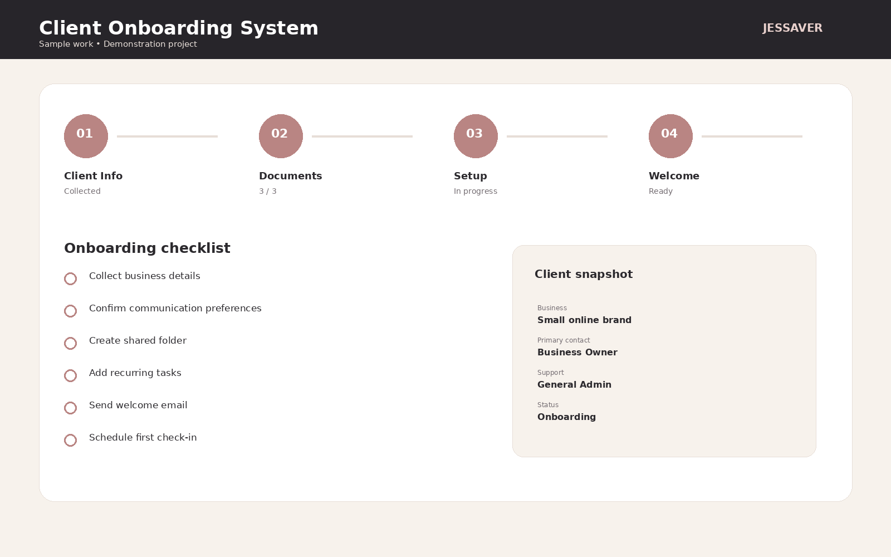
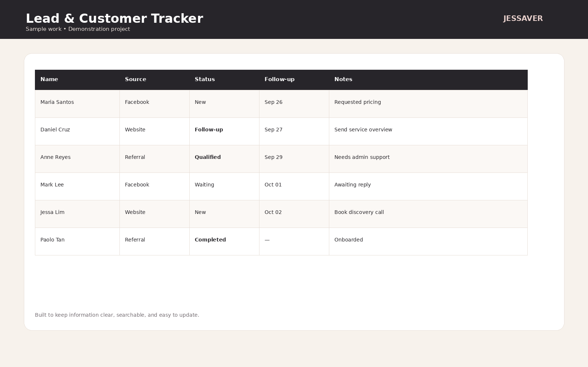
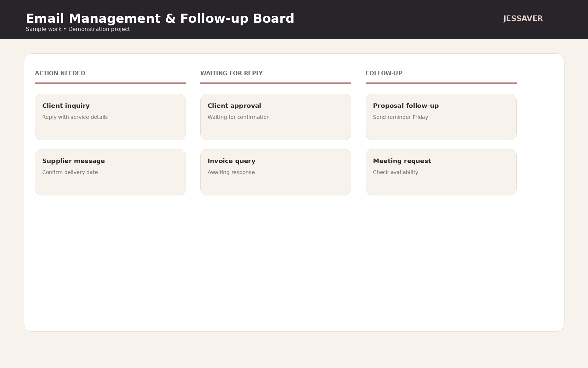
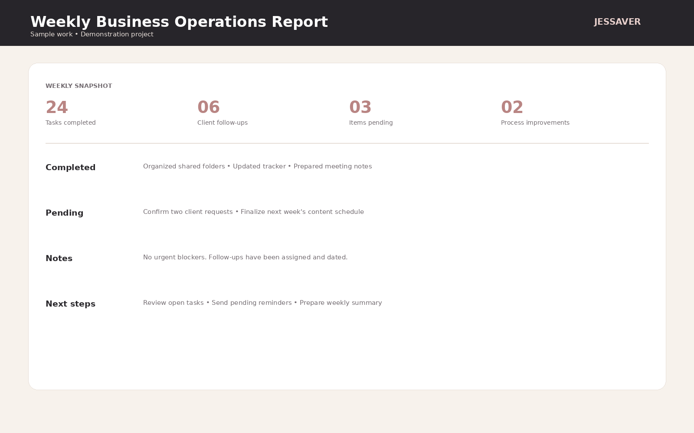
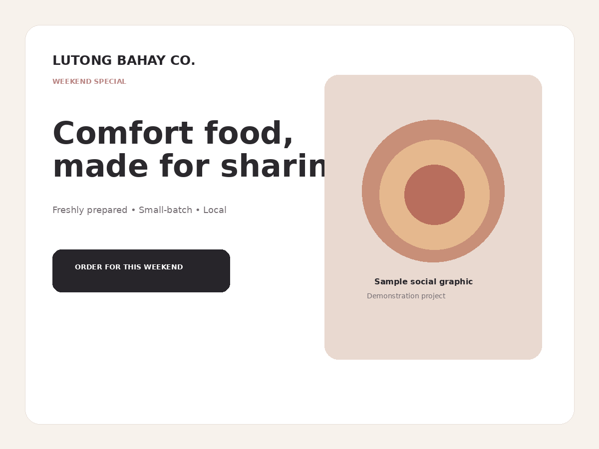

Organization & Task Management
Administrative Dashboard
A demonstration dashboard designed to give a business owner a quick view of open tasks, follow-ups, priorities, and weekly activity.
These demonstration projects are designed to show my approach to organization, administration, documentation, data, and social media support.
A demonstration dashboard designed to give a business owner a quick view of open tasks, follow-ups, priorities, and weekly activity.

A simple onboarding flow showing how client information, documents, setup tasks, and welcome steps can be organized.

A clean spreadsheet-style tracker for organizing contacts, status, follow-up dates, and notes.

A practical content planning system for keeping platforms, content ideas, statuses, and publishing days organized.

A visual inbox workflow that separates action items, waiting replies, and follow-ups so nothing important gets buried.

A concise weekly snapshot that gives a business owner visibility into completed work, pending items, notes, and next steps.

A fictional promotional graphic created as a demonstration of simple, clean social content support.
If your business needs a tracker, content calendar, report, document, research system, or another type of support, we can discuss the workflow and the deliverable.
Tell me what you need →